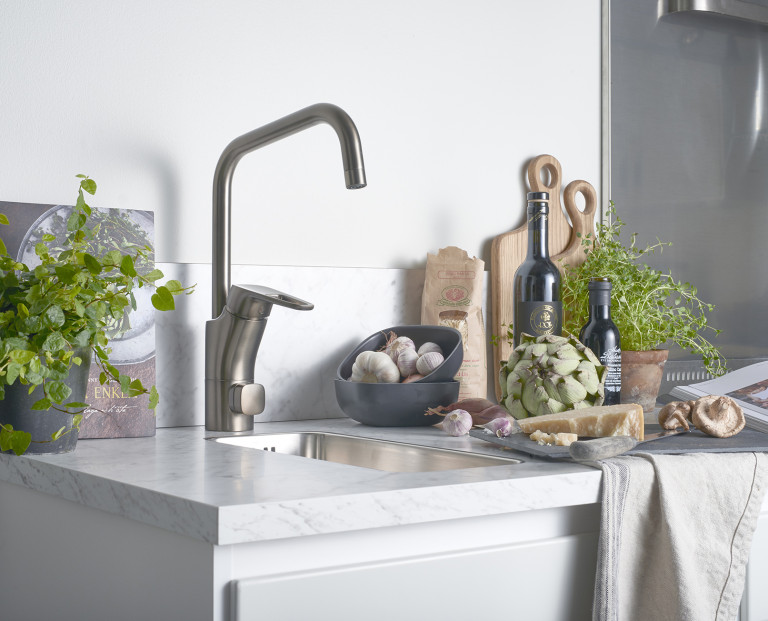

Vatten
Kommunalt vatten eller egen brunn, vattenrening och driftsäkra installationer.
Läs merVVS Kungen AB
Vi hjälper privatpersoner, bostadsrättsföreningar, företag, skolor och industrier med rådgivning, installation och service inom vatten, värme och sanitet i hela Stockholm-Mälardalen.
Kontakta ossOm oss
VVS Kungen AB hjälper privatpersoner, BRF:er, företag, skolor och industri med rådgivning, installation och service inom VVS och rörmokeri.
Vi arbetar både i nybyggnation och vid ombyggnad/modernisering med fokus på driftsäkra installationer och tydlig kommunikation genom hela projektet.
VVS Kungen är en erfaren VVS-installatör för både mindre serviceuppdrag och större projekt.
Vi projekterar och installerar lösningar för både kommunalt vatten och anläggningar med egen brunn.
VVS Kungen erbjuder rådgivning och besparingskalkyl inför ditt val och köp av värmesystem. Vi installerar och levererar från välkända tillverkare med högsta kvalité.
VVS Kungen installerar i nybyggnation och vid modernisering/renovering av badrum och kök. Våra leverantörer inom sanitet erbjuder dig allt från lyx till funktionell kvalitet.
För produktinformation, besök våra samverkanspartners och leverantörer.
VVS Kungen AB
Allévägen 11
155 32 Nykvarn
VVS Kungen AB
Ströpstavägen 20
155 32 Nykvarn
Lars: 070-586 64 30
Emil: 070-233 84 87